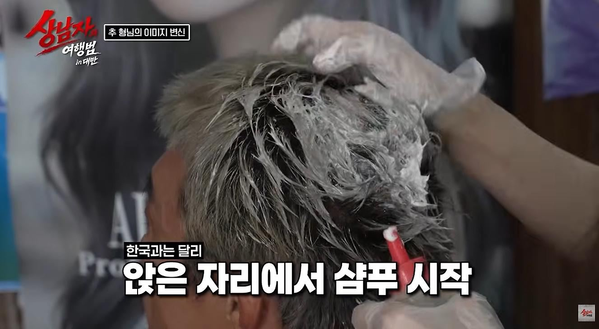
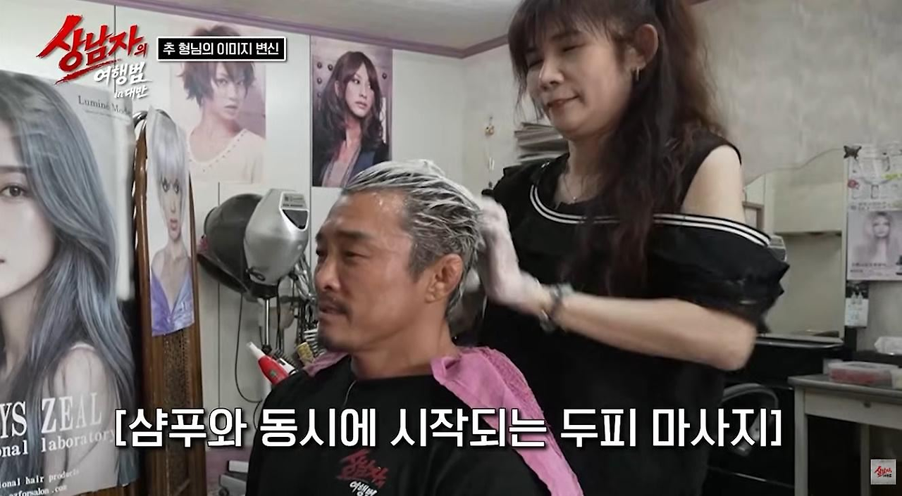
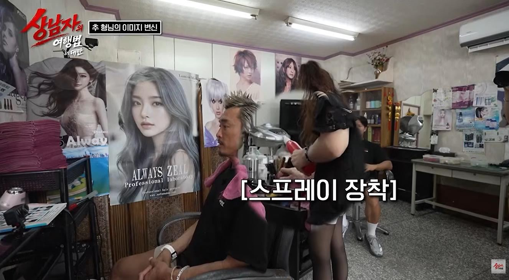
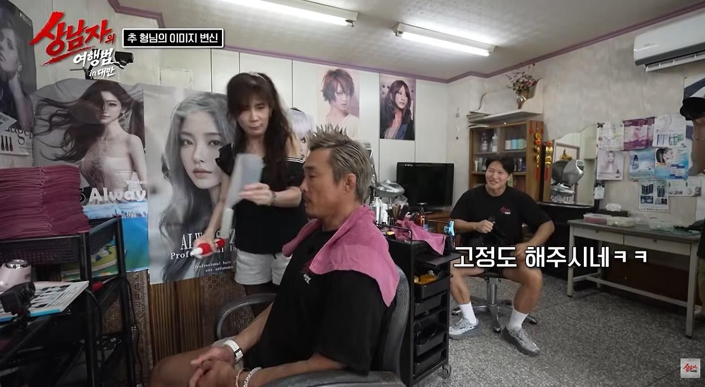

아니 진짜 잘어울림 ㅋㅋㅋㅋㅋㅋㅋㅋㅋㅋ




아니 진짜 잘어울림 ㅋㅋㅋㅋㅋㅋㅋㅋㅋㅋ
20년 넘음
2002년쯤 아닐까
클레멘타인 이동준 아저씨가 하던 머리 아닌가??
추컴
펑크락 모히칸을 이시대에 다시보네 ㅋㅋㅋ
2006년이냐
패션왕 보는거 같네
동준이형...?
이동준이네 ㅋㅋㅋㅋ
2000년대초반 유행하던 베컴 닭벼슬 머리잖아
너무 좆구린데ㅋㅋ추성훈이라 그나마 살린듯
일본인 개그맨같음
머리 염색도 하얗게 되어있어서
샴푸질 하고 물 안뿌리고 나온사람같다 하면 안되겠죠?
솔직히 존나 망한거같은데
좀 짧게 모아서 올리지
뭔ㅋㅋㅋㅋㅋㅋㅋ
와 베컴ㅋㅋ
클레멘타인 아저씨잔아?
밑에서 두 번째 짤은 부부가 쌍으로 임신한건가?
근데 진짜로 잘 어울리는 거 같은데?ㅋㅋㅋ
옛날 일본에 저런느낌 축구선수있었는데
일본놈들 저 머리 참 좋아했음
백엄선생님컷
나 대만사람들하고 일하는데
전부다 스포츠머리하다가 불금되면 하드왁스발라서 저머리함 ㅋㅋㅋㅋㅋ
임원앞에서 발표할때도 저 머리인거보면
걍 저머리가 대만 1황인듯
근데 다들 ㅈ직모라 다른머리 못할거같긴함
대만에서 저 스타일이 유행하나봄
일본 보케 같아
거의 30년 전 머리스타일의 재림
한 10년? 15년 그전에 보던 스타일인데